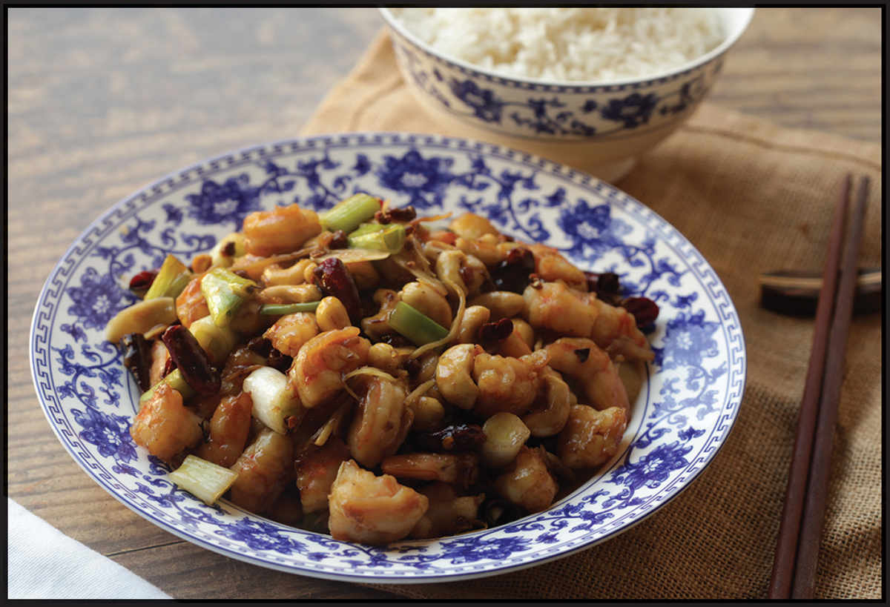
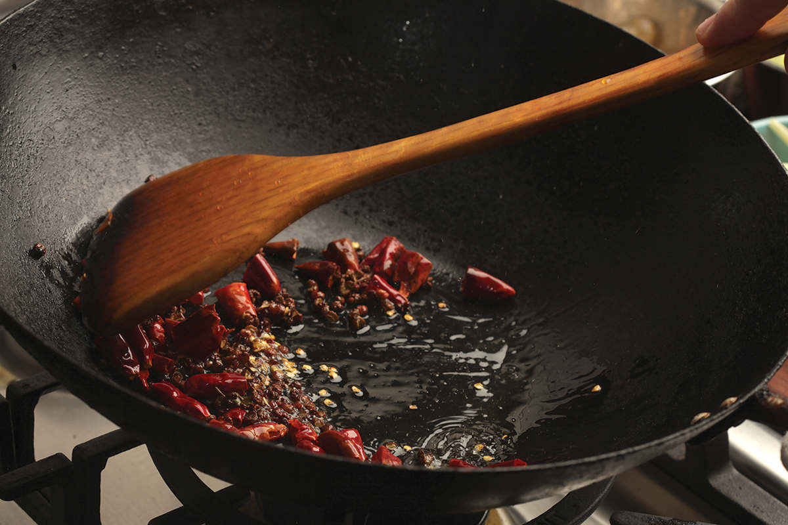
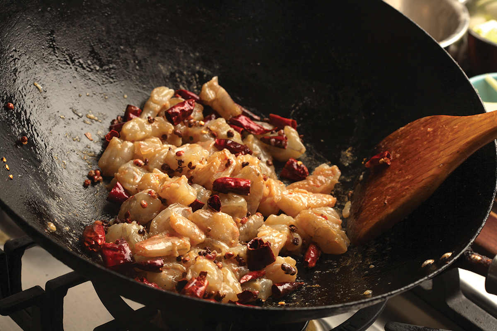
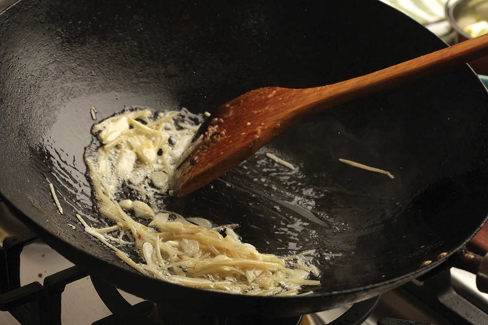
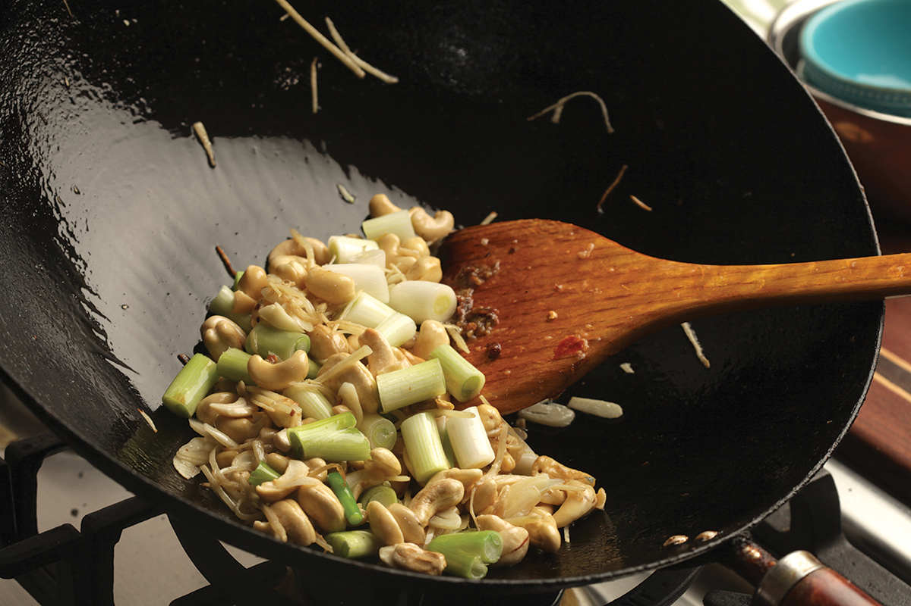
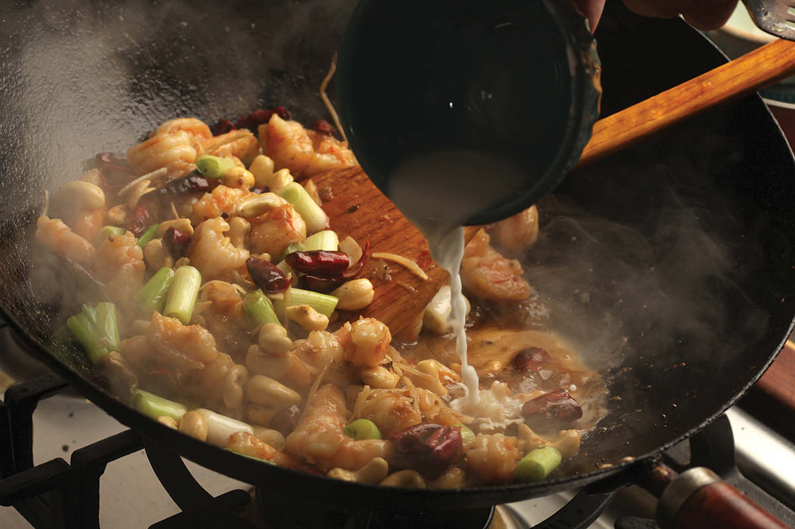
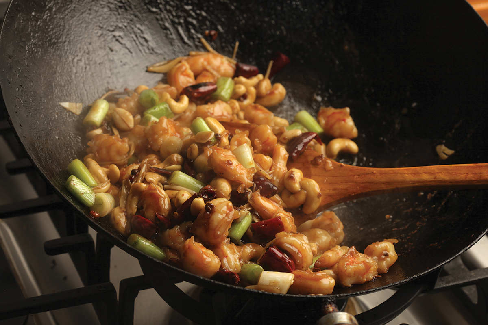

KUNG PAO SHRIMP
|
Yield Serves 4 Active Time 25 minutes Total Time 40 minutes |
12.5 grams is about 1⅓ tablespoons Diamond Crystal kosher salt, 1 tablespoon Morton’s kosher salt, or 2½ teaspoons table salt |
You can replace the chicken in either classic Sichuan gong bao ji ding or Chinese American kung pao chicken with small, plump peeled shrimp or larger shrimp cut into bite-sized pieces. The only minor adjustment that I make is adding a baking soda brine to the shrimp for plumpness. Instead of peanuts, I like to use cashews in this dish. Their shape and size resembles the shrimp, and their sweeter, milder flavor pairs well with the sweetness of shrimp.
INGREDIENTS
For the Shrimp:
2 cups (500 ml) very cold water
12.5 g salt (see Note)
2 teaspoons (10 g) baking soda
1 pound (450 g) large shrimp (around 31–40 count), peeled
A cup or so of ice cubes
1 teaspoon (5 ml) Shaoxing wine or dry sherry
1 teaspoon (5 ml) light soy sauce or shoyu
1 teaspoon (about 3 g) cornstarch
For the Sauce:
4 teaspoons (20 ml) honey
1 tablespoon (15 ml) Chinkiang vinegar
1 tablespoon (15 ml) Shaoxing wine or dry sherry
4 teaspoons (20 ml) light soy sauce or shoyu
For the Cornstarch Slurry:
1 teaspoon (3 g) cornstarch
1 tablespoon (15 ml) water
For the Stir-Fry:
3 tablespoons (45 ml) peanut, rice bran, or other neutral oil
6 to 12 small dried red chiles (such as árbol), stems removed, cut into ½-inch pieces with scissors, and seeds discarded
1 teaspoon (about 2 g) Sichuan peppercorns, reddish husks only (stems and black seeds discarded)
4 medium garlic cloves (12 g), thinly sliced
One 1-inch knob fresh ginger, preferably young ginger, peeled and cut into fine matchsticks (about 20 g; see here)
6 scallions, white and pale green parts only, cut into ½-inch pieces
¾ cup cashews or roasted peanuts (about 4 ounces/120 g)







DIRECTIONS
1For the Shrimp: Combine the water, salt, and baking soda in a bowl and stir until the salt and baking soda are dissolved. Add the shrimp and stir to separate them and ensure the brine flows all around. Add the ice cubes and let the shrimp brine for at least 15 minutes and up to 30. Drain thoroughly and pat dry on paper towels or spin in a paper-towel-lined salad spinner.
2Transfer to a bowl and add the wine, soy sauce, and cornstarch. Toss to combine.
3For the Sauce: Combine the honey, vinegar, wine, and soy sauce in a small bowl and stir together until homogenous. Set aside. Combine the cornstarch and water in a separate small bowl and stir with a fork until the cornstarch is dissolved.
4BEFORE YOU STIR-FRY, GET YOUR BOWLS READY:
5For the Stir-Fry: Heat a wok over high heat until lightly smoking. Add 1 tablespoon (15 ml) of the oil and swirl to coat. Immediately add the chiles and Sichuan peppercorns. Stir-fry until fragrant but not burnt, about 5 seconds. Immediately add the shrimp and stir-fry constantly until the shrimp is nearly cooked through, about 3 minutes. Transfer to a bowl and set aside.
6Wipe out the wok (there may be a film on the bottom, which you can scrub out in the sink; there is no rush to continue). Heat the remaining 2 tablespoons (30 ml) oil over high heat until shimmering. Add the garlic and ginger and stir-fry until fragrant, about 10 seconds. Add the scallions and cashews and stir-fry for 30 seconds.
7Return the shrimp to the wok and toss everything to combine. Stir the sauce and add to the wok by pouring it around the edges. Stir the cornstarch slurry and add a splash. Cook, tossing, until the sauce thickens and the shrimp is cooked through, about 30 seconds longer. Adjust the sauce consistency with more cornstarch slurry if it is too thin or a splash of water if it is too thick. Transfer to a serving platter and serve immediately with steamed rice.